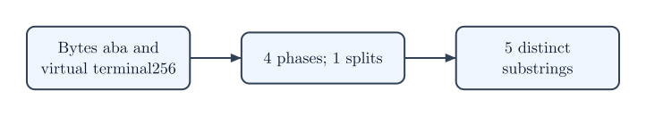
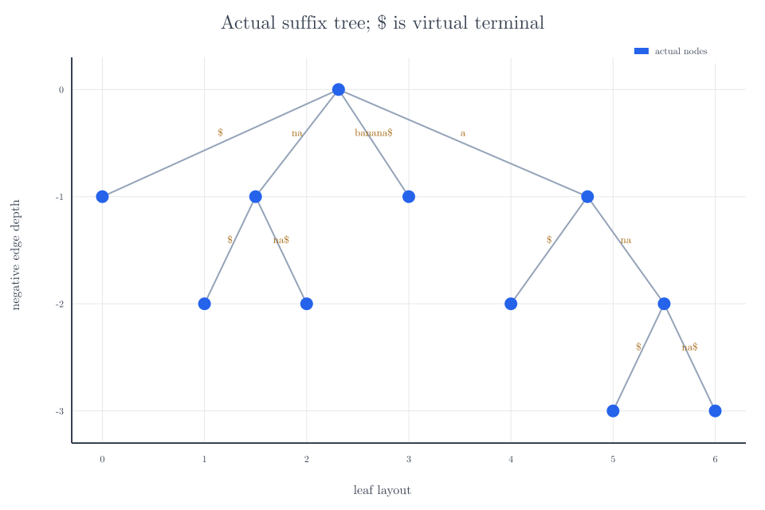
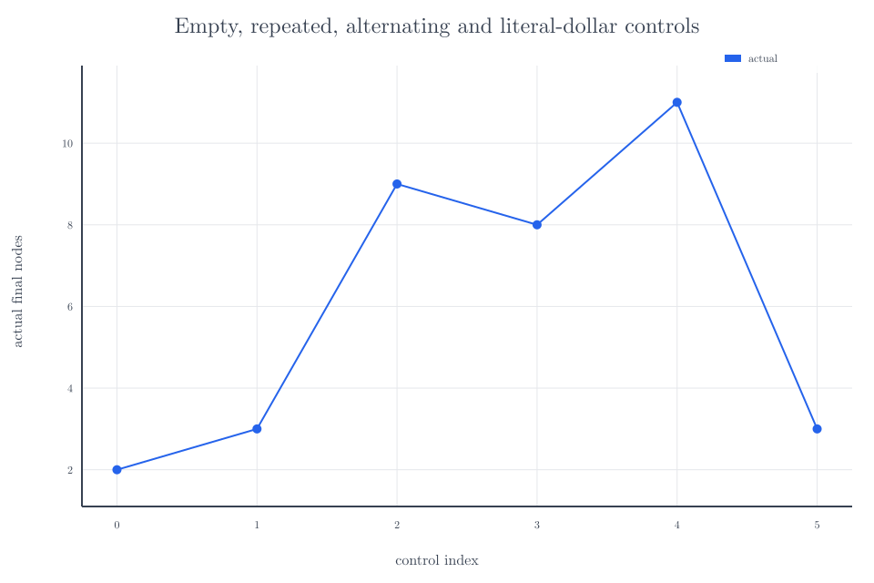
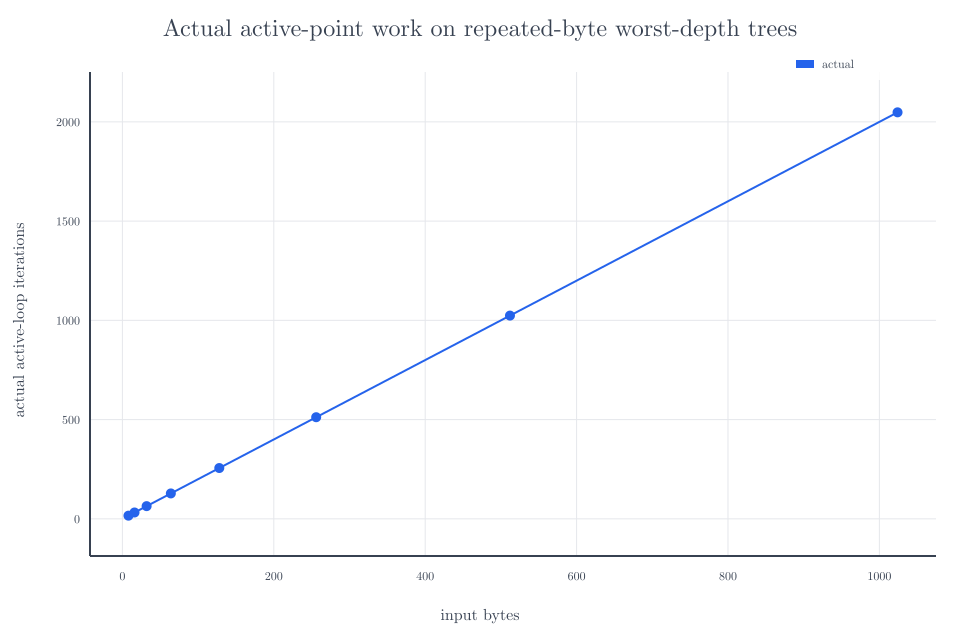

Ukkonen suffix trees: actual phases and compressed edges
Abstract
Repeated substring queries benefit from indexing all suffixes once. A compressed suffix tree represents every substring as a prefix of a root-to-node path while sharing repeated text.
The method
Ukkonen maintains an active node, edge and length while appending each byte, then a distinct virtual terminal256. Missing transitions add leaves; mismatching edge interiors split an edge; matching interiors defer remaining suffix work. Suffix links and skip/count hops amortize rescanning. Ordered maps give O(n log σ) construction for bounded byte alphabet σ≤257, O(m log σ) lookup and O(n) nodes. Sum actual edge lengths excluding one terminal per leaf to count distinct nonempty substrings.
Simple worked example
#include <dm/dm.hpp>
int main() {
namespace a = dm::algorithms;
namespace g = dm::graphics;
std::filesystem::create_directories("build");
auto r = a::build_suffix_tree_work("aba");
std::print("| phase | actual nodes |\n|---:|---:|\n");
for (std::size_t i = 0; i < r.nodes_after_phase.size(); ++i)
std::print("|{}|{}|\n", i, r.nodes_after_phase[i]);
std::print("\nActual splits {}; distinct substrings {}.\n", r.splits,
a::distinct_substring_count(r.tree));
g::Diagram concept_diagram(48, 1100);
concept_diagram.node("n0", {0, 0}, "Bytes aba and virtual terminal256");
concept_diagram.node("n1", {5, 0},
std::format("{} phases; {} splits", r.phases, r.splits));
concept_diagram.node("n2", {10, 0},
std::format("{} distinct substrings",
a::distinct_substring_count(r.tree)));
concept_diagram.edge("n0", "n1").edge("n1", "n2");
concept_diagram.save_svg("build/ukkonen_tiny.svg");
}| phase | actual nodes |
|---|---|
| 0 | 2 |
| 1 | 3 |
| 2 | 3 |
| 3 | 6 |
Actual splits 1; distinct substrings 5.

The retained original experiment
#include <dm/dm.hpp>
int main() {
namespace a = dm::algorithms;
namespace g = dm::graphics;
std::filesystem::create_directories("build");
auto r = a::build_suffix_tree_work("banana");
std::print("| query | actual membership |\n|---|---|\n");
for (std::string q : {"ana", "nan", "banana", "ban", "anas", "x"})
std::print("|{}|{}|\n", q, a::suffix_tree_contains(r.tree, q));
std::print("\nNodes {}; actual splits {}; distinct substrings {}.\n",
r.tree.nodes.size(), r.splits,
a::distinct_substring_count(r.tree));
auto p = a::suffix_tree_plot(r.tree);
p.save_svg("build/ukkonen_original.svg");
}| query | actual membership |
|---|---|
| ana | true |
| nan | true |
| banana | true |
| ban | true |
| anas | false |
| x | false |
Nodes 11; actual splits 3; distinct substrings 15.

Checking the theory and controls
#include <dm/dm.hpp>
int main() {
namespace a = dm::algorithms;
namespace g = dm::graphics;
std::filesystem::create_directories("build");
std::vector<double> x, y;
std::print("| text | actual nodes | distinct substrings |\n|---|---:|---:|\n");
int i = 0;
for (std::string q : {"", "a", "aaaa", "abab", "banana", "$"}) {
auto r = a::build_suffix_tree_work(q);
std::print("|{}|{}|{}|\n", q.empty() ? "(empty)" : q,
r.tree.nodes.size(), a::distinct_substring_count(r.tree));
x.push_back(i++);
y.push_back(r.tree.nodes.size());
}
auto p = g::RPlot::create();
p.line(x, y, "actual", {37, 99, 235}, 2);
p.points(x, y, "", {37, 99, 235}, 5);
p.title("Empty, repeated, alternating and literal-dollar controls").x_label(
"control index").y_label("actual final nodes");
p.save_svg("build/ukkonen_controls.svg");
}| text | actual nodes | distinct substrings |
|---|---|---|
| (empty) | 2 | 0 |
| a | 3 | 1 |
| aaaa | 9 | 4 |
| abab | 8 | 7 |
| banana | 11 | 15 |
| $ | 3 | 1 |

Sensitivity and selected work
#include <dm/dm.hpp>
int main() {
namespace a = dm::algorithms;
namespace g = dm::graphics;
std::filesystem::create_directories("build");
std::vector<double> x, y;
std::print("| repeated bytes | phases | active-loop iterations | splits | walk downs " "|\n|---:|---:|---:|---:|---:|\n");
for (int n : {8, 16, 32, 64, 128, 256, 512, 1024}) {
auto r = a::build_suffix_tree_work(std::string(n, 'a'));
std::print("|{}|{}|{}|{}|{}|\n", n, r.phases, r.extensions, r.splits,
r.walk_downs);
x.push_back(n);
y.push_back(r.extensions);
}
auto p = g::RPlot::create();
p.line(x, y, "actual", {37, 99, 235}, 2);
p.points(x, y, "", {37, 99, 235}, 5);
p.title("Actual active-point work on repeated-byte worst-depth trees").x_label("input bytes").y_label("actual active-loop iterations");
p.save_svg("build/ukkonen_work.svg");
}| repeated bytes | phases | active-loop iterations | splits | walk downs |
|---|---|---|---|---|
| 8 | 9 | 16 | 7 | 0 |
| 16 | 17 | 32 | 15 | 0 |
| 32 | 33 | 64 | 31 | 0 |
| 64 | 65 | 128 | 63 | 0 |
| 128 | 129 | 256 | 127 | 0 |
| 256 | 257 | 512 | 255 | 0 |
| 512 | 513 | 1024 | 511 | 0 |
| 1024 | 1025 | 2048 | 1023 | 0 |

Interpretation and limits
Text and patterns are byte strings, including embedded NULs. The virtual terminal is not a literal dollar byte; $ is merely its figure glyph. Tree consumers assume an unmodified canonical tree. Diagram layout is iterative, so a deep tree does not recurse. One million input bytes is the explicit construction ceiling.
Every figure is saved locally by its complete editable program. No separate reconstruction supplies algorithm state. Counters describe the selected events, not elapsed time or peak memory.
References
Verified in the shared ten-document batch: 85 scoped native cases;21 directly
instrumented ASan/UBSan cases;36 executable public examples;63/63 definitions
across13 full scopes plus8 changed mixed-scope contracts;10 hovers;14393
independent records/67914 checks;frozen valid-input comparisons across all ten
families including bit-identical default Iris fits;11 checkout/installed
standalone headers and linked ten-family consumer;40 executed programs and40
inspected figures with both exports. Receipts:
build/mepml-conversion/batch-404-413/.